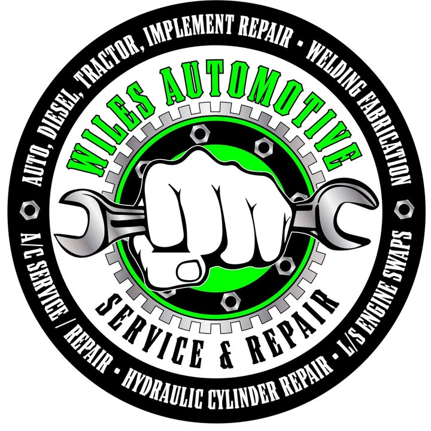

Diagnostics
Finding the real problem, like a spark plug instead of a new engine.
Ask about diagnostics →
Wiles AutomotiveAn honest, hard-working shop in Fulton where BJ treats every customer like family, from family cars to tractor trailers.
Finding the real problem, like a spark plug instead of a new engine.
Ask about diagnostics →Alternators, batteries and more, at fair prices.
Ask about auto repair →Roadside help for semis near Highway 25 and I-22, per customers.
Ask about truck help →Another mechanic said I needed a new engine. Wiles found all I needed was a spark plug.
They stopped what they were doing to help our driver when our semi went down. Very honest people.
2003 S Adams St, Fulton, MS 38843
Call nowGet directionsEmail wilesautomotive82@gmail.comFacebook page| Mon–Fri | 8 AM–5 PM |
|---|---|
| Sat–Sun | Closed |